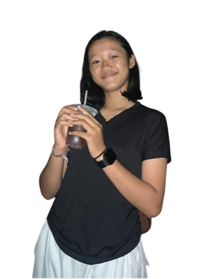

Hai Aku Putri Aku adalah siswi SMK N 1 Denpasar dengan jurusan Rekayasa Perangkat Lunak(XI RPL2) aku baru saja belajar membuat web dengan html dan css ini adalah hal yang lumayan menyenangkan,aku jadi bisa merasakan proses membuat sebuah website
Selain menjadi seorang pelajar aku juga adalah seorang atlet Pencak silat hobiku juga berolahraga aku juga suka melihat bunga bahkan di rumahku aku sempat menanam bunga matahari dan bunga margot berwarna merah dan ungu itu cantik sekali aku suka melihatnya